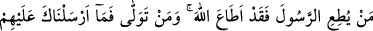
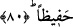

Nimetini ona ihsan etti ve tamamladı
Onun dünyaya teşrifleriyle putlar yüzüstü düştü
Onun ümmeti bütün ümmetlerden daha üstün oldu
Efendimizin mübarek omuzları ortasında güneş gibi
Nübüvvet mührü ayan beyandı
Hz. Peygamber (s.a.v.)’in kürek kemikleri arasında bulunan peygamberlik mührü,
onun şeytanın vesvesesinden korunduğuna işâretti. Çünkü o sinsi şeytan, kürek kemikleri
arasından gelip hortumunu insanın kalbi tarafına sokar ve vesvese verir. O kişi Allah’ı
zikrettiği zaman şeytan arkasına gizlenir. Nübüvvet mührünün üzerinde “Muhammed,
emîn bir peygamberdir.” yazan kıllar bulunuyordu. Bu konuda başka şeyler de
söylenmiştir. Mührün üzerindeki yazıların çokluğu ve çeşitliliği ile ilgili rivâyetler
hallere ve tecellîlere yahut da bakanların bakışına göre değiştiği söylenerek
bağdaştırılabilir.
İmdi ilim ehli, Ramazan ayının en üstün ay olduğunda ittifak etmişlerdir. Çünkü
Kur’ân bu ayda indirilmiştir. Ondan sonraki ay ise Rebîu’l-evvel ayıdır. Zira bu ay
Rahman’ın sevgilisinin doğum ayıdır. En üstün gecenin ise Kur’ân kendisinde nâzil
olduğu için Kadir gecesi olduğu söylenmiştir. Ayrıca Mevlid-i Muhammedî gecesi de
zikredilir. Çünkü O (s.a.v.) olmasaydı, ne Kur’ân nâzil olur, ne de Kadir gecesi belli
olurdu. Bu bakımdan ümmetin Hz. Peygamber (s.a.v)’in şefâatine nâil olmak ve
komşuluğunu elde etmek için, O’nun doğduğu ay ve geceye ta’zim etmesi gerekir.
80- Kim Rasûl’e itâat ederse Allah’a itâat etmiş olur. Yüz çevirene gelince, seni
onların başına bekçi göndermedik!
“Kim Rasûl’e itâat ederse Allah’a itâat etmiş olur.” Çünkü o, gerçekte tebliğcidir.
Emreden ise Allah Teâlâ’dır.
Rivâyet edilir ki Hz. Peygamber (s.a.v) “Beni seven Allah’ı sevmiş olur, bana itâat
eden Allah’a itâat etmiş olur.”[87] buyurunca, münâfıklar: “Şirki yasakladığı halde
kendisi şirk koşuyor. Hristiyanların Îsâ’yı rab edindikleri gibi bu da bizim kendisini
rab edinmemizden başka bir şey istemiyor.” dediler. Bunun üzerine bu âyet nâzil oldu.
Ona itâat etmekten “yüz çevirene gelince, seni onların başına” amellerini alıp onları
hesaba çekecek bir “bekçi göndermedik.” Sana düşen sâdece tebliğ etmektir.
Hesaplarını görmek ise bize düşer.